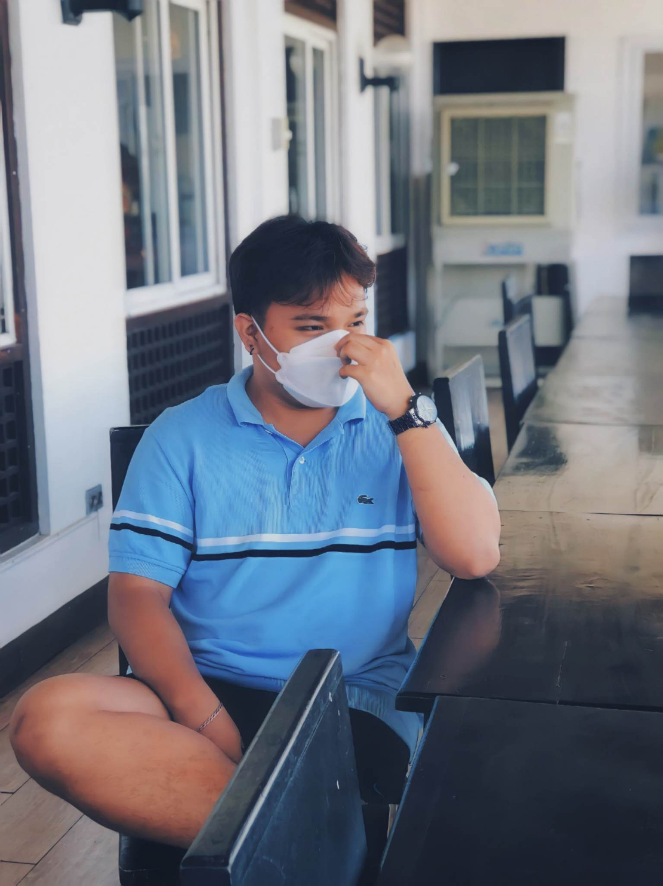

ABOUT ME



Basketball
RAMMIL CAMINGAWAN
Hi, I'm Rammil D. Camingawan Jr. I am 21 years old and live at BLK 11 LOT 22 Imperial St, Vista Verde, San Isidro, Cainta, Rizal. I am 2nd Year College, Bachelor of Science Information Technology at ICCT Main Campus School. I am an interesting, fun loving guy with a good sense of humor. One thing about me that is important to know though is that at first I come off as a very shy individualistic guy but once I get to know people and are comfortable with my environment I am great. It is hard for me to make friends but once I make them, it's great and I am all different. I joke, laugh and humor people and I also get as much as I give. I am a very kind, compassionate, sensitive guy as my close friends will tell you. I have a tough shell but on the inside I am soft. I am also a very principled person and stand strong on what is right and wrong. I am also a very straight and honest person. I understand and know that we all put on a show sometimes and don't show who we really are or what we feel but some people do this constantly and those kinds of people I cannot stand.
MY FRIENDS
MY FAMILY
HOBBIES
Basketball
Basketball is my favorite hobby of all time! I got involved in basketball because i was interested in the sport and i started playing it everyday from when I completed my college education. Basketball is a great way of exercise and a great way to have fun with friends and possibly make some new ones. I love to watch and play the game, basketball is a very entertaining sport and can be played by anyone. Basketball has many negative and positive things about it based on my opinion. Basketball is known as a good pastime in many people’s eyes but can also be seen as a passion for many others.
ONLINE GAMES
Playing Video Games sources of ‘happiness’ that can help them ‘escape’ life temporarily. video games just happen to be one of the effective stress reliving methods; that can attract just anyone due to the variety of its genres. Video games has proven to be a source of entertainment for millions of people around the world. Unlike the common negative approach of videogames influence on people.
WATCHING MOVIES
I love watching different kinds of movies whenever I am free. I can spend my leisure time watching it. On the one side, watching movies is a fun activity and on the other side, it is informative. There are many social platforms where you can easily watch a movie and you can also rent a film and enjoy it. If you watch an educational movie, you will get to learn many things in your free time as well. Watching movies is full of enjoyment to me and it also enriches me with knowledge.